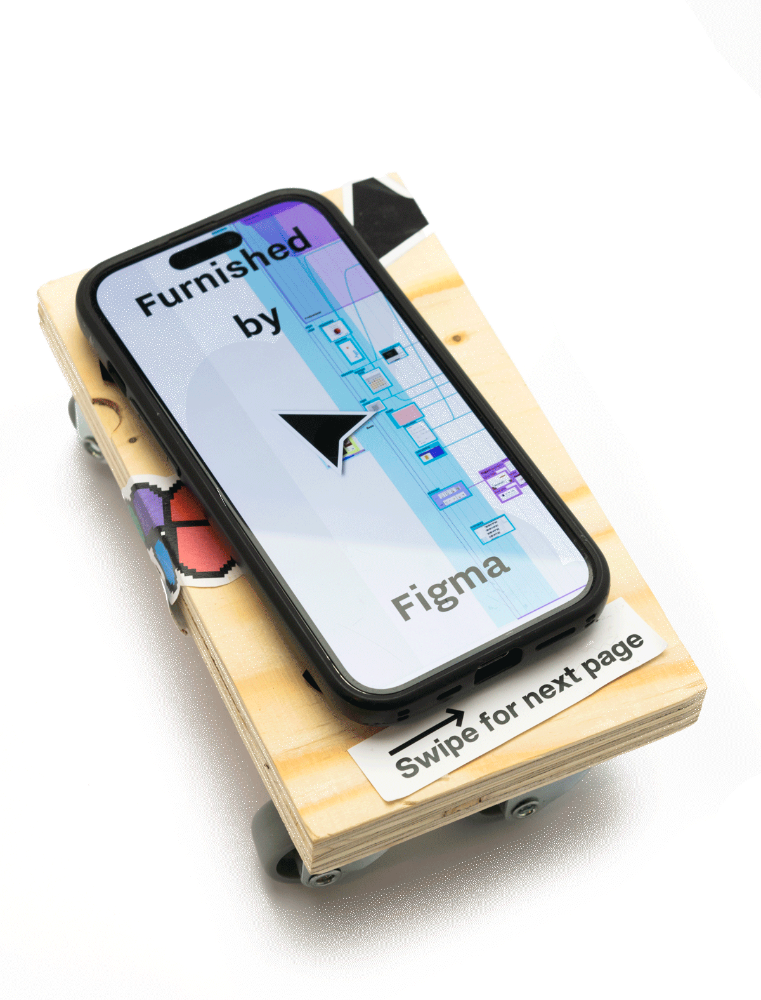
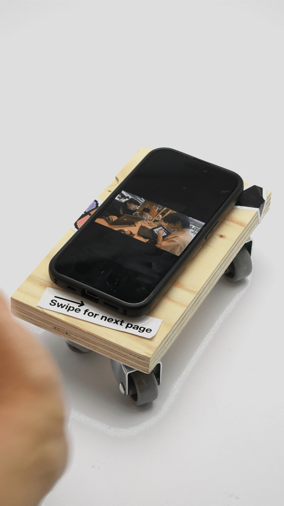
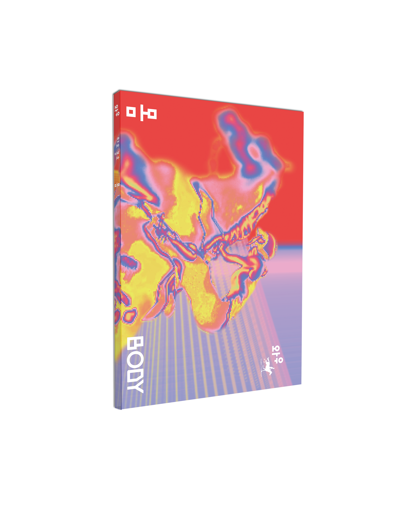
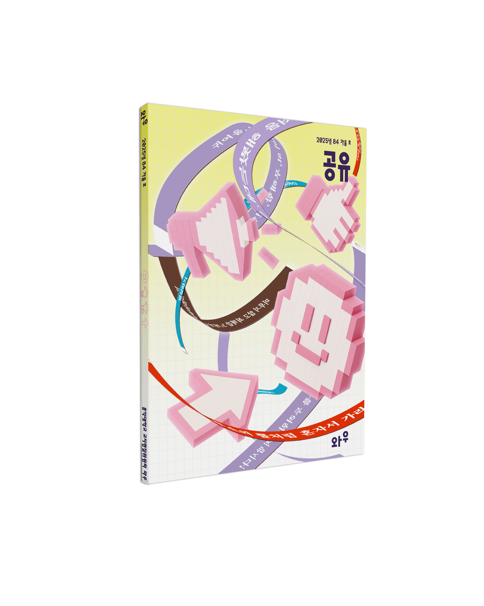
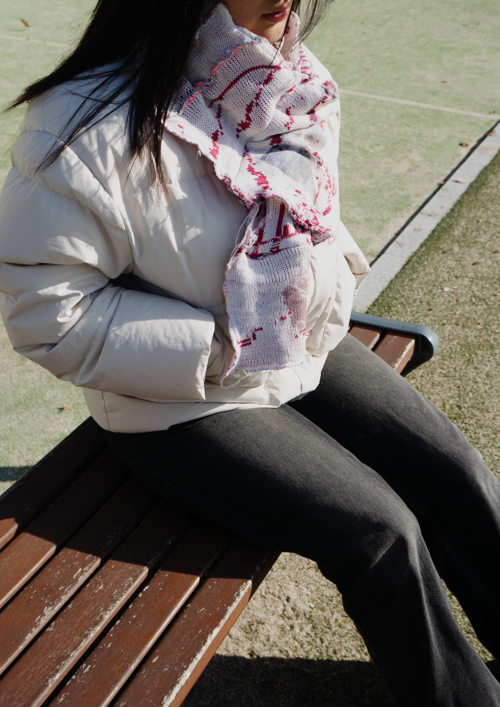
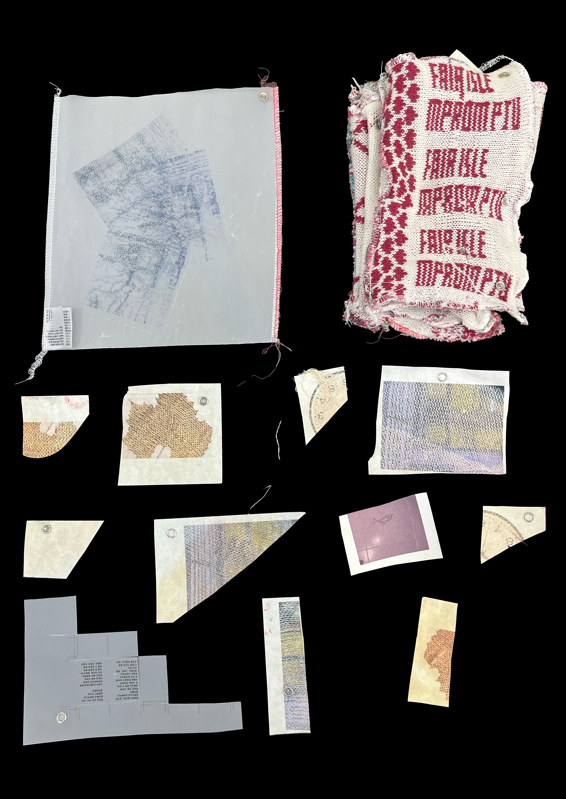

Everywhere Hanger
Everywhere Hanger is a temporary hanger for clothing, for house and office. With a simple action, it can be applied to any flat board within 2cm. It features to be produced multiply, by the tool I designed by myself. Hanger everywhere, Everywhere Hanger.


the Filet and the Fish

The Mackerel and the Filet is a zine that is inspired from the ironic contrast in Korean text about mackerel and interview with Historical Vagabond, a maritime historian wrote the article ‘Macks: How Mackerel Became Slang for Pimp’. Mackerel is one of the most widely distributed migratory fish around the world. This property lead to let it symbolize the working class and its endurance, at the same time produced folk etymology about pimping and concept of deception by its flashy looking and quick spoiling tendency. The name of it is an homage from Levi-Strauss, the Raw and the Cooked. With act of cooking, it reveals how the myth of mackerel is made and how people see it.


Furnished by Figma
How is Figma becoming new, governing standard of UX/UI design platform? As a design platform, Figma not only mediates people in remote places, but the guideline of collaboration, working process, readability rules, and even technical restrictions from display company. So I designed a workshop for learning Figma in alternative way. I first asked someone who has no idea of how UI/UX is made to draw the interface they use. And I brought those drawing to a group of people who can design and asked them to make things about interface at Figma. This installation shows the whole process of the research and executions, revealing myself as a moving cursor.


ANNND

ANNND is a knit-textile-based fashion brand co-created with two classmates through a cross-disciplinary PBL course that combined Visual Communication Design and Textile Fashion Design. Drawing inspiration from the endlessly extendable and connective nature of letterforms, ANNND translates this playful quality into fashion and knit textiles as physical extensions of the body. Stretch beyond the ordinary—discover joy in spaces that can only be reached through imagination.


Magazine WOW
WOW” is a quarterly school magazine published twice a year—in spring and fall—by the Hongik University Editorial Committee, starting from its first issue in 1951. Each issue of “WOW” features in-depth coverage of a wide range of topics and presents various experimental visual designs that reflect the chosen themes.

WOW 82


WOW 83


WOW 84



WOW 85


Fair Isle Impromptu
How much does temporal order govern the surface of a graphic? The knitting machine follows the holes of a punch card, producing patterns in strict sequence. Fair Isle Impromptu is sometimes bound by this rigid sense of time—and sometimes breaks free from it. Reverse play, repetition, omission—these are the language of time. The impromptu is composed in real time and translated into graphic form. Eventually, the impromptu folds in zigzags and becomes a book. The emergence of pages leads to the emergence of temporality. Let’s unfold the impromptu once more. Fair Isle Impromptu is reinterpreted through the curves of the body.



Poster for Special Lecture
Poster for special lecture of OJOS & POT, 2024


Cupping T
Project outcome for Communication Design(1), Hongik University. Beauty can come from the strangest of places, even the most disgusting of places. It’s the ugly things I notice more, because other people tend to ignore the ugly things. (Redesigned in 2026)